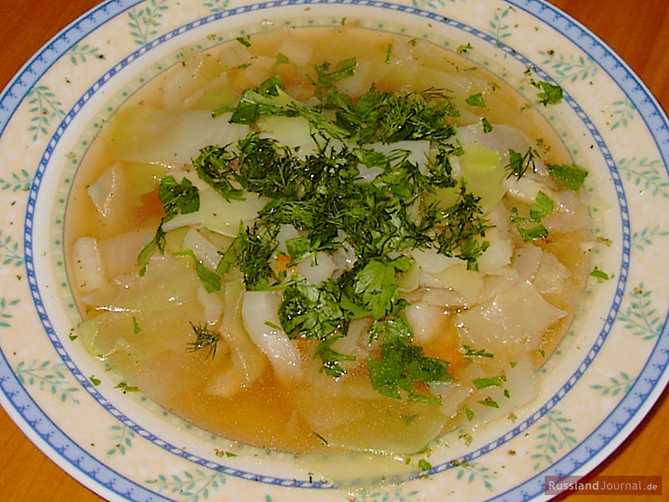
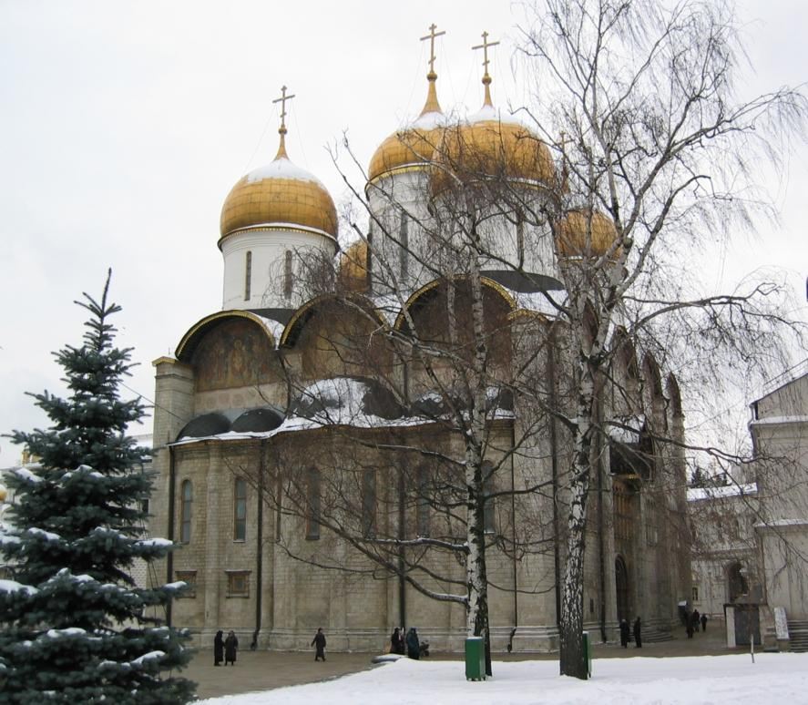
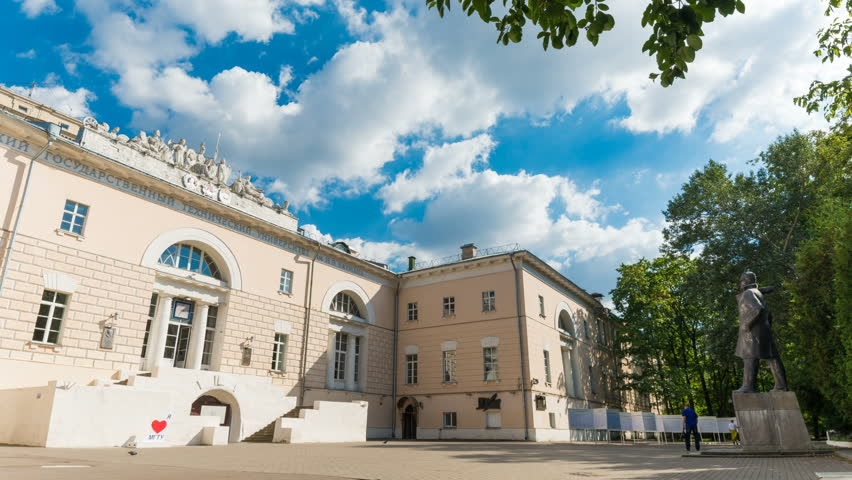

각자의 할 일 - 모스크바에서의 알렉산드르
게시: 2020-03-09T06:30:27+09:00
잠시 시선을 나폴레옹으로부터 알렉산드르에게로 돌려보겠습니다. 모스크바를 향해 말을 달리던 알렉산드르의 마음은 당연히 좋지 못했습니다. 1709년 카알 12세(Karl XII)가 이끄는 스웨덴군이 폴타바(Poltava) 전투에서 박살이 난 이후, 러시아 영토 깊숙이 외국군이 쳐들어온 것은 이것이 처음이었습니다. 이런 위기 속에서 러시아 국민들을 다독이고 장병들을 통솔하여 침략군을 막아내는 것이 짜르가 할 일인데, 일단 알렉산드르는 장병들을 통솔하는데는 처참하게 실패한 뒤였습니다. 이제 남은 것은 국민들을 다독여 군에 보낼 보충병들과 보급품을 마련하는 것이었는데, 풀이 죽은 알렉산드르에게는 그것조차 만만한 일이 아니었습니다. 일단 러시아 귀족들과 시민 계급에게는 나폴레옹의 침공이 걱정했던 것보다는 긍정적인 반응을 일으켰습니다. 러시아 귀족층과 시민 계급은 거의 프랑스어만 사용했습니다. 루소나 볼테르 등 프랑스 혁명의 이론적 기반이 되었던 계몽 사상에 대해서는 누구보다 이들이 잘 알고 있었고 또 그에 대한 심정적 동조자들도 많았습니다. 톨스토이의 '전쟁과 평화'에도 나오듯이, 모스크바 시민들 중에는 나폴레옹을 영웅으로 숭상하는 사람들까지 많았습니다. 그런데 그런 대영웅이 대군을 몰고 낙후된 러시아를 개조하러 온다는데, 과연 그런 사람들이 미개한 조국을 위해 총을 들고 나폴레옹과 싸우려 들었을까요 ? 놀랍게도, 막상 프랑스군이 네만 강을 넘었다는 소식이 전해지자, 대부분의 귀족들과 시민 계급은 갑자기 열렬한 애국자가 되었고 반-프랑스 정서가 온나라를 뒤덮었습니다. 그러나 그건 프랑스제 코담배를 쏟아버리거나 프랑스 요리를 버리고 러시아 전통의 양배추 수프인 쉬치(Shchi, 정작 러시아어로는 щи, '쉬'라고 발음)를 먹는 식의 애국심이었습니다. 모스크바 부잣집에서 양배추 수프를 먹는다고 프랑스군이 죽지는 않습니다. 국민들이 자발적으로 군에 입대하고 돈을 내야 프랑스군과 싸울 수 있었습니다. 그런데, 국민의 90%는 농노였습니다. 러시아의 농노는 기본적으로 그냥 노예로서, 물건처럼 사고 팔 수 있었고 주인이 구타는 물론 살해해도 괜찮은 존재였습니다. 농노 중 절반은 귀족 가문의 소유였고 나머지 절반은 국가 및 교회의 소유였지요. 따라서 결국 귀족들이 짜르에게 재산, 즉 농노와 현금을 바쳐야 프랑스군을 무찌를 수 있었던 것입니다.

(러시아의 양배추 수프인 쉬치입니다. 키릴 문자 표기도 그렇고, 발음을 들어봐도 쉬치가 아니라 러시아 사람들은 이걸 '쉬'라고 부르는 것 같습니다. 신맛이 난다고 하는데, 레시피를 보면 사우어 크림을 넣게 되어 있습니다.)
잠깐, 농노들의 지지가 아니라 귀족의 지지가 필요하다고요 ? 아무리 귀족들이 농노들에게 '가서 프랑스군과 싸우라'고 명령해도 농노들이 말을 안 들으면 끝이었습니다. 따라서 농노들의 마음을 다독거리는 것이 중요했습니다. 하지만 기본적으로 알렉산드르는 농노들에게 아부를 할 생각은 전혀 없었습니다. 그건 이론적으로 불가능했습니다. 나폴레옹은 신분제로 대표되는 앙시앵 레짐(ancien regime, 구체제)을 뒤엎는 것이 목표였기 때문에 궁극적으로는 농노 해방을 선언하리라고 예상되는 사람이었고, 알렉산드르를 정점으로 하는 러시아 귀족 계급은 절대 농노들을 해방시켜 줄 수가 없는 처지였습니다. 당시 러시아 농노들 사이에서는 '나폴레옹이 알렉산드르에게 농노 해방을 강력하게 권고했고, 만약 그러지 않을 경우 본인이 농노 해방을 선언하겠다고 협박했다'는 소문이 자자했습니다. 알렉산드르가 농노들에게 호소해볼 부분은 '종교'였습니다. 농노들이 고달픈 현실을 참고 견딜 수 있었던 것은 그들 대부분이 러시아 정교의 독실한 신자였기 때문이었는데, 러시아인들 사이에서 나폴레옹은 교황을 체포하고 겁박하는 비기독교 세력이라고 알려져 있었습니다. 알렉산드르는 '러시아 고유의 문화와 믿음을 파괴하려는 야만인들에 맞서 일어나라'는 내용의 포고문을 직접 작성했는데, 아이러니컬하게도 알렉산드르의 그 포고문은 프랑스어로 작성되어 있었기 때문에 국무부 장관이자 러시아 민족주의자인 쉬시코프(Aleksandr Semyonovich Shishkov)가 러시아어로 번역을 해야 했습니다. 그럼에도 불구하고 농노들이 흔들리는 것은 어쩔 수 없었습니다. 그들에게 있어 대부분의 귀족 지주들은 자신들을 잔혹하게 압제하는 악당들에 불과했으니까요. 그래도 농노들은 상대적으로 고분고분한 편이었습니다. 농노들을 믿지 않았던 러시아 정부가 각 지방마다 2선 부대이긴 해도 2개 중대씩인 약 300명의 수비대를 배치했기 때문입니다. 무엇보다, 농노들에게는 지도자가 없었습니다. 결국 1812년 난리통 속에서도 농노 반란은 67건, 그것도 소규모로 그쳤으며, 이는 평소의 2배 정도에 불과한 것이었습니다.

(로스톱친입니다. 원래 그는 육군 장성이었고, 이번 전쟁을 앞두고 특별히 알렉산드르가 모스크바 수비를 위해 임명한 그의 심복이었습니다. 그는 나폴레옹에게 모스크바를 넘겨줄 때 불을 질러버린 것으로 인해 프랑스 뿐만 아니라 러시아 국내에서도 많은 욕을 먹었는데, 처음에는 그 방화를 지시한 것에 대해 적극적으로 부인했으나, 전쟁이 끝난 뒤 결국 시인을 했습니다. 그는 비엔나 회담에 참석하는 알렉산드르를 수행할 정도의 심복이었으나, 모스크바 방화에 얽힌 불명예 때문인지 결국 좌천되었습니다.) 결국 러시아 국민들의 지지를 끌어낸다는 것은 모스크바 귀족들과 상인계급의 지지를 이끌어내는 것을 뜻했습니다. 그런데, 들려오는 소식에 따르면 상트 페체르부르그에서도 모스크바에서도 귀족들의 분위기는 그리 좋지 않은 것 같았습니다. 무엇보다 왜 러시아군이 제대로 된 싸움 한번 못해보고 계속 후퇴만 하는지 후방의 귀족들은 납득을 못했습니다. 감히 아무도 거기에 대해 짜르 개인을 탓하는 사람은 없었지만, 스스로 자신이 거기에 일조를 했다는 것을 누구보다 잘 아는 알렉산드르로서는 모스크바 귀족들을 대면하는 것이 쉬운 일이 아니었습니다. 원래 평상시라면 짜르가 모스크바에 입성하는 것은 시민들과 명사들이 우르르 몰려나와 환영해야 할 행사였습니다만, 알렉산드르는 감히 대낮에 요란스럽게 행차할 엄두를 내지 못했습니다. 모스크바 인근에 도착하자, 그는 자신이 임명해둔 모스크바 지사 로스톱친(Fyodor Rostopchin)을 따로 불러 시내 상황을 물어본 뒤, 한밤중에 조용히 입성했습니다. 그러나 뜻 밖에도, 그렇게 몰래몰래 들어가던 알렉산드르는 모스크바 귀족들과 시민계급 뿐만 아니라 농민들까지 다 몰려나와 자신을 기다리고 있는 것을 보고 침을 꿀꺽 삼켜야 했습니다. 사람들의 표정은 절실해보이면서도 매우 심각했습니다. 그 다음날 아침 모스크바 우스펜스키 성당(Успенский, 로마자 표기로는 Uspensky)에서 예배를 드린 뒤, 알렉산드르는 슬로보다(Sloboda) 궁전에서 모스크바 귀족들과 상인계급 사람들을 만났습니다. 원래 수줍고 내성적이던 그는 여기서 인상적인 연설로 거기 모인 귀족들을 사로잡지는 않았습니다. 그는 그냥 조국이 처한 위기와, 그 극복을 위해 부족한 것이 사람과 현금이라는 것을 짧은 연설로 알린 뒤, '그 문제에 대해 당신들끼리 상의해보시오'라며 일단 그 자리를 떠났습니다.

(우스펜스키 성당은 영어 표기로는 Cathedral of the Dormition 즉 성모 영면 성당이라고 합니다. 러시아 정교에서는 성모 마리아가 일단 영면에 들었다가 부활하여 승천한 것으로 믿는다고 하네요. 1475~79년에 이탈리아 건축가에 의해 지어진 유서 깊은 건물입니다.)

(알렉산드르가 슬로보다 Sloboda 궁전에서 귀족 및 상인계급들을 만나 연설한 부분은 톨스토리의 '전쟁과 평화'에도 나옵니다. 이 궁전은 원래 외국인들 거주 구역인 네메츠카야 슬로보다 Nemetskaya Sloboda에 있어서 그런 이름이 붙었다고 합니다. 하지만 정작 이 궁전은 1812년 모스크바 대화재 때 불타버렸고, 이 건물은 나중에 기술 학교로 재건된 것입니다.)
귀족들은 귀족들대로, 상인계급은 그들끼리 격렬한 감정을 표출하며 난장판같은 토론을 벌였는데, 애초에 귀족들은 이미 많은 농노들을 병사들로 뽑아보냈는데 이제 또 추가 부담을 하라는 것에 대해 반감이 심했습니다. 그래도 프랑스군이 오면 모든 것이 끝장난다는 위기 의식이 발동하여, 소유한 농노 장정 25명 중 1명을 차출하여 군에 보내는 것을 논의하고 있었는데, 누군가 통렬한 애국심이 가득찬 외침으로 농노 장정 10명 중 1명을 뽑아보내자고 호소했고, 결국 대혼란 끝에 그 안이 가결되었습니다. 나중에 드러났지만 그렇게 외친 사람은 땅이 하나도 없고 따라서 농노가 없는 귀족이었습니다. 이와 함께 귀족들은 300만 루블의 기부금을, 상인계급은 800만 루블을 내기로 결의가 되었습니다. 뿐만 아니었습니다. 당시 모스크바에 살고 있던 비아젬스키(Pytor Andreievich Viazemsky) 대공에 따르면 계속 날아드는 러시아군의 후퇴 소식에 크게 동요하던 모스크바의 분위기는 알렉산드르가 친히 나타나면서 급격하게 변화했습니다. 여태까지 이 전쟁을 강건너 불구경처럼 생각하던 귀족들과 상인들이 조국을 수호하겠다는 애국심으로 불타오르게 된 것입니다. 그런 점에서 알렉산드르는 역시 처음부터 전방의 야전군이 아니라 모스크바에 있었어야 했었습니다. 그러나 정작 알렉산드르는 이렇게 상황이 급반전하여 자신의 영향력에 자신감이 생기자, 다시 전방으로 달려가 군을 직접 통솔하여 나폴레옹을 무찌르겠다는 야망에 또 불이 붙었습니다. 다행히도 때마침 그가 끔찍하게 아끼던 여동생 예카테리나가 '오빠의 결정 장애 때문에 바클레이가 얼마나 고생을 했는지'를 조목조목 따지는 편지를 상트 페체르부르그에서 보내오는 바람에 그 생각을 접었다고 합니다. 알렉산드르가 이렇게 후방에서 제 할 일을 하는 사이, 바클레이도 스몰렌스크에서 제 할 일을 하고 있었습니다. 그런데 여기서 바클레이의 진영으로 귀한 손님이 기쁜 소식을 들고 찾아옵니다. 그는 누구였을까요 ?
Source : 1812 Napoleon's Fatal March on Moscow by Adam Zamoyski Napoleon: A Life By Andrew Roberts http://www.philatelia.net/bonapart/plots/?more=1&id=2705 https://en.wikipedia.org/wiki/Fyodor_Rostopchin https://en.wikipedia.org/wiki/Dormition_Cathedral,_Moscow